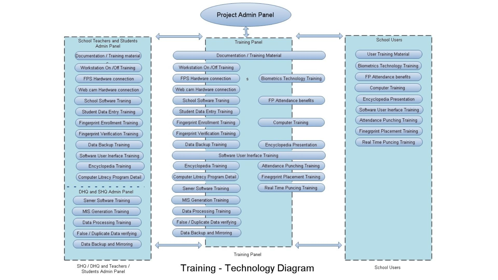

Overview
No matter how smart a system is, it only works if the people using it truly believe in it.
When we rolled out biometric attendance across thousands of government schools in Gujarat, the technology itself wasn’t the biggest challenge. We needed to make sure that the people using it would be comfortable with it.
For many teachers, especially in rural and semi-urban areas, the idea of using fingerprint scanners, syncing data, and accessing dashboards felt very alien. In their minds, it was only something used in big-city corporates and international infrastructure.
And understandably so. These were educators used to writing in registers and handing over monthly reports, not managing synced systems, verifying hardware, or interpreting analytics dashboards.
And moving an educator who loves their pen and paper to an automated system is not easy as it sounds.
We knew that for this project to have a real impact, our work won’t end with delivering biometric devices or setting up a secure infrastructure.
We had to also build confidence, provide guidance, and stay close to the ground.
The Challenge
Most of the hesitation we noticed was not a resistance to change, it was uncertainty about the new methods. Teachers and administrators were worried about a few things:
- “What if the scanner doesn’t work?”
- “What happens if I click the wrong button?”
- “Will this add to our workload instead of reducing it?”
- “What if I accidentally delete all the data?”
There was also some concern that the system would expose the gaps they were previously able to manage quietly, like backdated entries, proxy attendance, or incomplete reports.
In short, the new system disrupted old routines, and naturally, that came with apprehension.
We couldn’t solve this with manuals or user-guides. We had to show up, explain patiently, demonstrate repeatedly, and stay available long after training ended.
The ACPL Approach to Training and Support
We treated onboarding not as a one-time exercise, but as an ongoing relationship with every level of the education system.
For Teachers and School Staff:
We conducted on-site training sessions that walked staff through every part of the system:
- How to take attendance using the fingerprint scanner
- What to do if the scanner doesn’t recognise a fingerprint
- How to view and understand attendance reports
- What happens during data syncs and how to tell if something’s wrong
Each session was hands-on. Teachers practiced on the actual hardware. There was no rush and no pressure, just clarity and support.
We also trained staff on basic data security, helping them understand why passwords matter, how access is restricted, and how to handle errors responsibly.
For Students:
We made sure students, too, were part of the journey. Especially in the early days, simple demos were held in classrooms to show them how to use the fingerprint scanner.
Once they understood that the system was there to protect their identity and ensure fairness, adoption for students became effortless. In many schools, students reminded each other to scan in daily, it became part of the culture. And most of the students actually enjoyed the new tech available to them. A great learning opportunity for kids in rural regions.
For District and State Officials:
At the top levels, we ran workshops that focused more on monitoring tools and decision-making:
- How to read attendance trends
- How to use the dashboard to spot problem areas
- How to request reports or generate queries
We gave officials a complete view of how the system works, not just the output. That made conversations about policy, resource planning, and interventions far more grounded and actionable.

What Helped the Most
Our greatest learning? Training alone isn’t enough. What makes adoption sustainable is ongoing support.
We set up a dedicated helpdesk to handle queries from across the state. Whether it was a school struggling to connect, a scanner that needed resetting, or a teacher simply unsure about a step, we were just a call away.
And we ensured our support staff maintained a professional and helpful tone in servicing. We weren’t “tech support” calling from a distance. We were the same team who had trained them, stood with them, and explained the system. We feel that that made all the difference.
Over time, the calls reduced. Confidence grew. Schools ran the system independently.
And slowly, the hesitation disappeared.
Looking Back
A system is only as strong as the people using it.
By focusing not just on deployment, but on familiarity, comfort, and trust, we made sure this transformation was welcomed by schools, students, and bureaucrats alike.
And that’s what made the system stick.
About Access Computech Pvt. Ltd.
At Access Computech, we’ve been delivering dependable, customised solutions for over 30 years, specialising in Point-of-Sale Machines and Personalised Identification Systems. From Attendance Recording and Access Control to Visitor Management, we create tailored systems that fit our clients’ unique needs.
Our tailored systems have enhanced efficiency across industries such as petrochemicals, refineries, steel, mining, power, electronics, and textiles.
With a passionate team and offices across the country, we stay ahead of the curve by adopting emerging technologies to deliver the latest, most reliable, high-quality solutions for our clients.
Our mission is simple: To consistently meet and exceed the expectations of our clients by adhering to the highest industry standards.
Our Certifications & Accreditations: Certified for excellence with ISO 9001, ISO 14000, ISO 27001, and CMM Level 3, we uphold industry-leading standards in every aspect of our business.